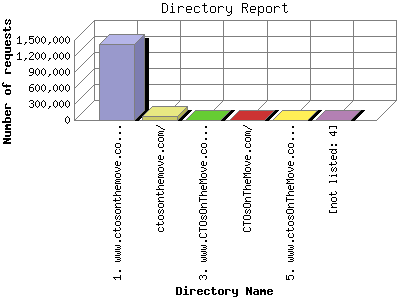

The Directory Report analyzes accesses to this web site's directories. This information can be useful in determining the most requested areas.
This report shows results with at least 0.010000 percent of the total bytes. This report is sorted by amount of bytes transferred.

| Directory Name | Number of requests | Percentage of the bytes | |
|---|---|---|---|
| 1. | www.ctosonthemove.com/ | 1,422,498 | 93.53% |
| 2. | ctosonthemove.com/ | 67,479 | 6.02% |
| 3. | www.CTOsOnTheMove.com/ | 3,716 | 0.41% |
| 4. | CTOsOnTheMove.com/ | 444 | 0.03% |
| 5. | www.ctosOnTheMove.com/ | 84 | 0.01% |
| [not listed: 4] | 21 | 0.00% | |
This report was generated on June 15, 2011 14:02.
Report time frame July 28, 2010 00:18 to June 15, 2011 00:01.
| Web statistics report produced by: analog 6.0 / Report Magic 2.21 |